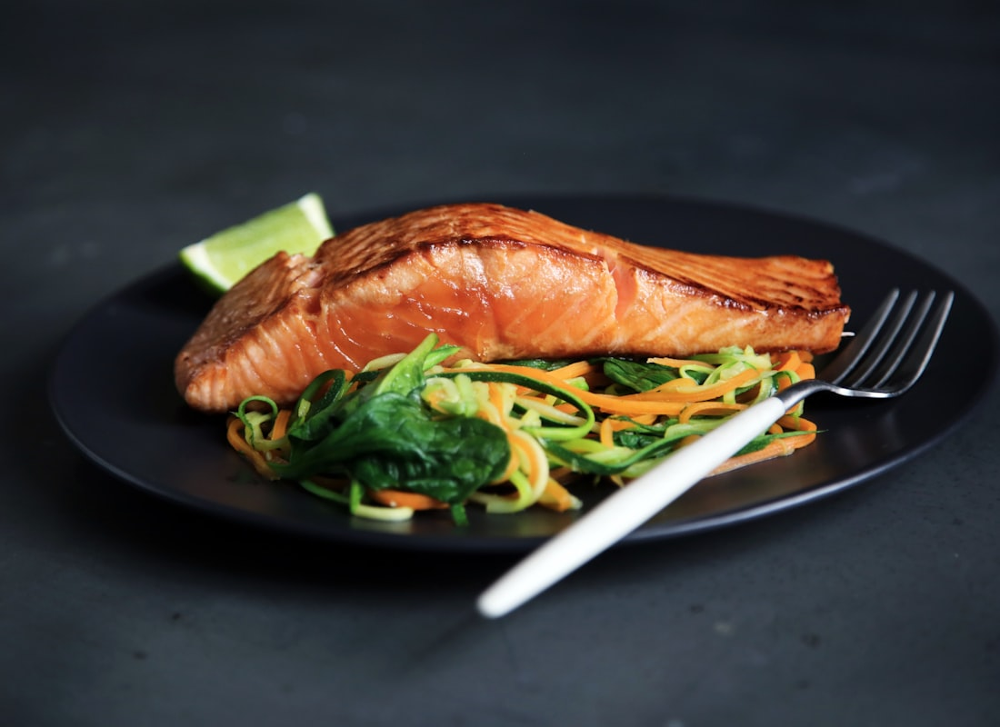
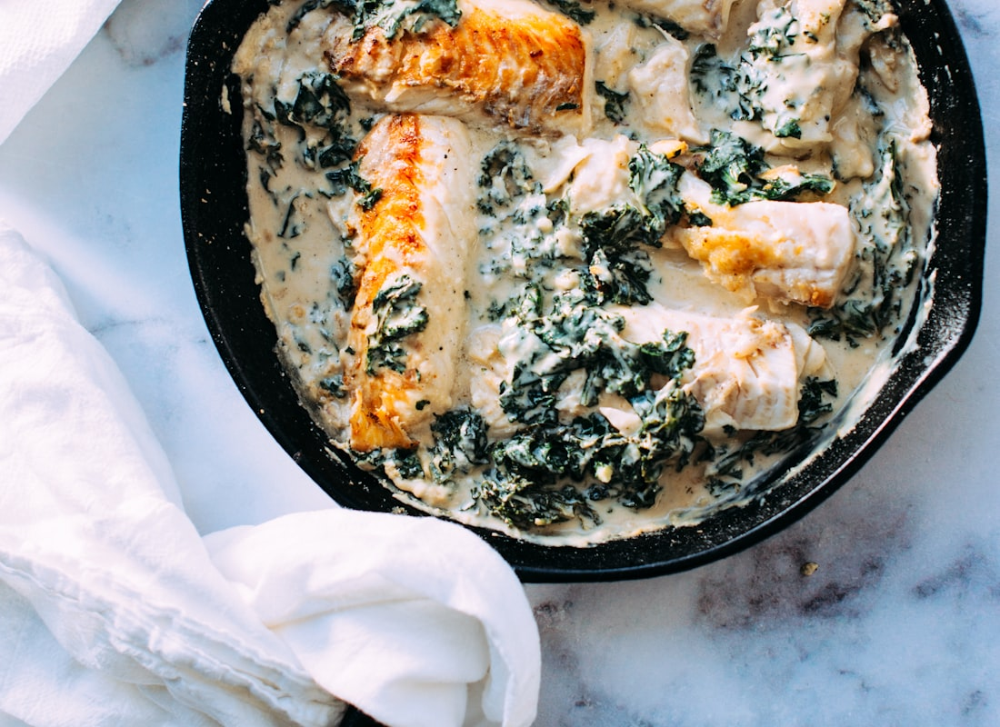

Recipe
Sheet-pan salmon, rice & broccoli
The week’s oily fish. Lemon, garlic, dill. No honey glaze, no shrimp, no quinoa.
4 (Mon + Tue dinner × 2)
30 minutes
Eat within 2 days. Cook Monday if you want it freshest.



Swipe for more photos.
Ingredients
- 4 salmon fillets, 5–6 oz each (~1½ lb)
- 1½ cups dry brown rice (or 4 scoops from the Sunday pot)
- 1½ lb broccoli florets
- 1 pint cherry tomatoes (optional)
- 2 tablespoons olive oil
- 3 garlic cloves, minced
- Zest + juice of 1 lemon, plus wedges
- 1 teaspoon dried dill (or 1 tablespoon fresh)
- ½ teaspoon black pepper
- Pinch of salt
Steps
- If rice isn’t already made: rinse 1½ cups brown rice, simmer in 3 cups water ~40 minutes. Rest 10, fluff.
- Heat oven to 400°F. Line a sheet pan.
- Toss broccoli (and tomatoes) with 1 tablespoon oil, half the garlic, pepper.
- Rub salmon with 1 tablespoon oil, remaining garlic, lemon zest, dill, pepper, pinch of salt.
- Veg around the edge, salmon in the middle skin-side down. Roast 12–15 minutes until salmon just flakes.
- Lemon juice over everything. Pack rice, veg, salmon. Eat by Tuesday night.
- Reheat in 30-second bursts, or warm the rice/broccoli and leave the salmon just warm.
Why it fits the week
Four fillets cover the weekly fish target. Broccoli and brown rice on the same pan / pot.